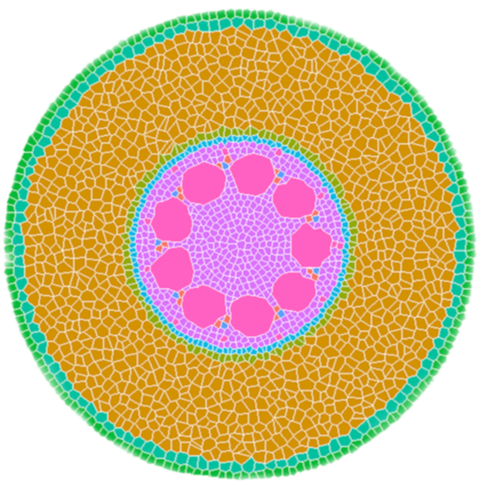
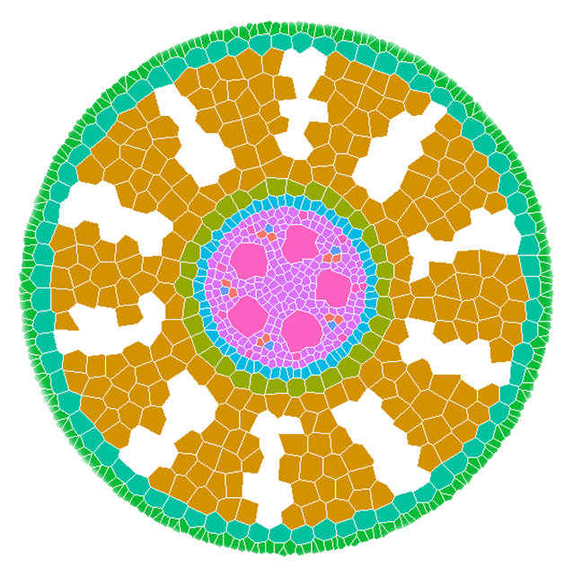

What is GRANAR?


GRANAR is a generator of complete root cross-section network in R.
Upon a small set of anatomical features the GRANAR model is able to reconstruct a generic root cell network for mono and dicotyledon.
Among the few parameters you can modify, there is the aerenchyma proportion, the number and size of the xylem vessels, but also the number of cell layers and the mean size of each cell type.
Once the anatomy is generated, it is possible to look after some functional features related to that anatomy. For instance, hydraulics conductivities can be computed when GRANAR is coupled with MECHA.
